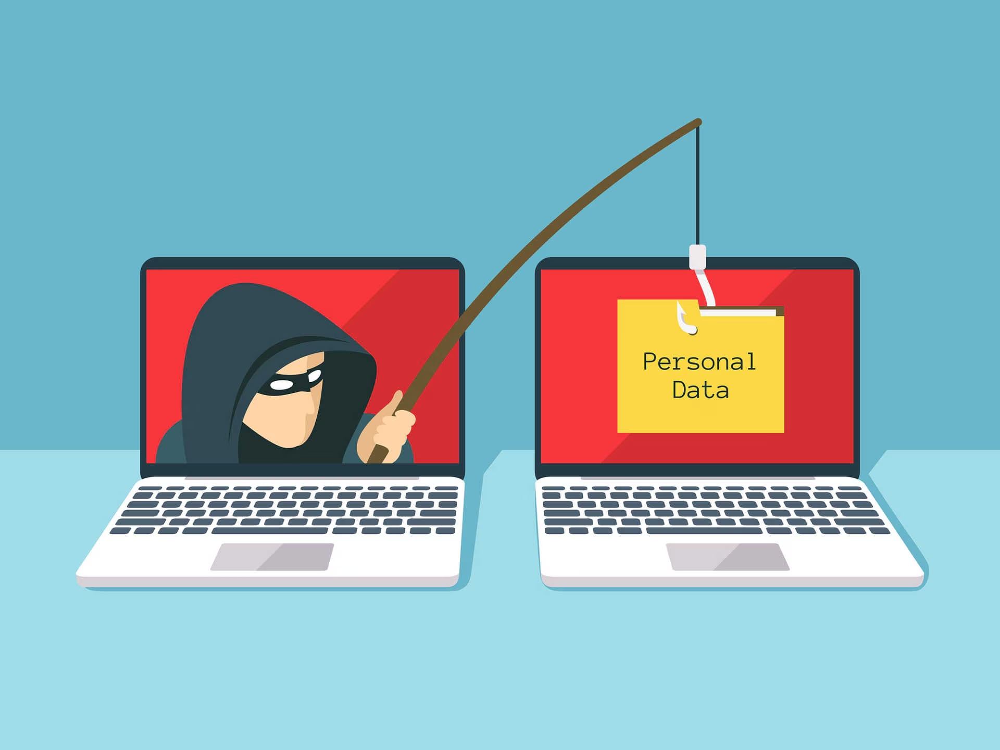
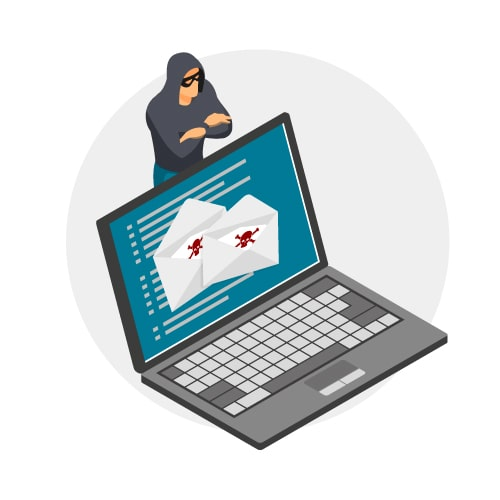
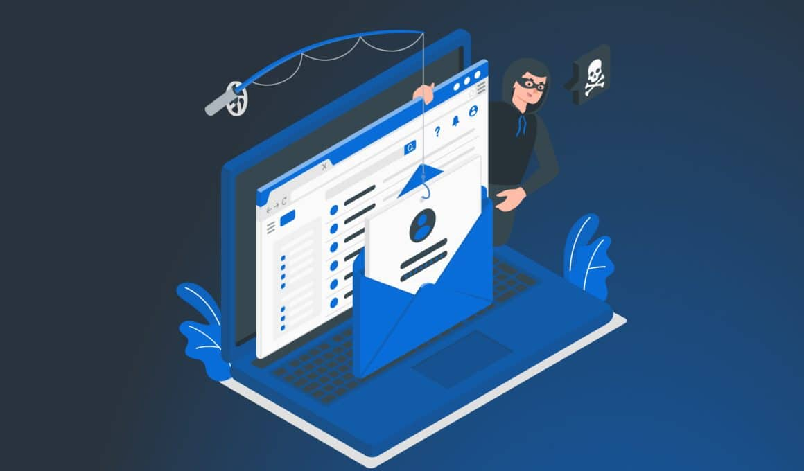

Estudiante: Arielis Ibarra

Piensa en el último correo raro que recibiste: uno que decía que tu cuenta bancaria tenía un problema, o que habías ganado un premio que nunca reclamaste. Ese tipo de mensaje no busca tu computador, te busca a ti. A eso se le llama ingeniería social: la técnica de manipular a una persona para que entregue información o realice una acción que normalmente no haría.
El phishing es la forma más común de ingeniería social. Consiste en hacerse pasar por una entidad confiable (un banco, una empresa, incluso un compañero de trabajo) para robar contraseñas, datos personales o dinero.
Este tema importa porque, sin importar qué tan segura sea la red o el software de una empresa, el punto más débil casi siempre es la misma persona detrás del teclado. Entender cómo funcionan estos engaños es el primer paso para no caer en ellos.
| Concepto | Definición breve |
|---|---|
| Ingeniería social | Manipulación psicológica para obtener información o acceso. |
| Phishing | Suplantación de identidad, normalmente por correo, para robar datos. |
| MFA (autenticación multifactor) | Capa extra de seguridad que pide algo más que una contraseña. |
| Superficie de ataque humano | El conjunto de personas que un atacante podría manipular dentro de una organización. |
| A favor de defenderse bien | Dificultades reales |
|---|---|
| Reduce drásticamente el robo de credenciales | La capacitación debe repetirse constantemente |
| Protege la reputación y los datos de la empresa | Los ataques evolucionan más rápido que la formación |
| El MFA detiene la mayoría de los accesos indebidos | Genera fricción o incomodidad para el usuario final |
| Los simulacros muestran quién necesita más apoyo | Nunca se llega a un riesgo cero, siempre existe el error humano |
Del lado de la defensa, estas son algunas herramientas comunes:

Uno de los casos más conocidos es el de Evaldas Rimasauskas, quien entre 2013 y 2015 hizo creer a empleados de Google y Facebook que representaba a un proveedor real. Con correos y facturas falsas, logró que ambas empresas transfirieran más de 100 millones de dólares a sus cuentas antes de ser descubierto.
En 2020, un grupo de atacantes llamó por teléfono a empleados de Twitter haciéndose pasar por soporte técnico interno (un caso claro de vishing y pretexting). Así lograron acceder a herramientas administrativas y tomar el control de cuentas verificadas de figuras públicas.
También está el caso de RSA Security en 2011: un empleado abrió un archivo adjunto de un correo con el asunto "2011 Recruitment Plan", que parecía inofensivo. Ese único clic permitió a los atacantes comprometer información sensible relacionada con los productos de seguridad de la empresa.
| Caso | Técnica principal | Consecuencia |
|---|---|---|
| Google / Facebook (Rimasauskas) | Phishing con facturas falsas | Pérdida de más de 100 millones de dólares |
| Twitter (2020) | Vishing y pretexting a empleados | Control de cuentas verificadas de alto perfil |
| RSA Security (2011) | Spear phishing con archivo adjunto | Robo de información sensible de seguridad |

La ingeniería social y el phishing demuestran algo simple pero incómodo: no hace falta romper un sistema si se puede convencer a una persona de abrir la puerta. Las ideas clave son que estos ataques explotan emociones como la urgencia, la confianza y el miedo, y que ninguna herramienta técnica reemplaza a un usuario que sabe reconocer las señales de alerta.
En la industria actual, la ciberseguridad ya no se entiende solo como firewalls y antivirus: la capacitación constante de las personas es tan importante como cualquier software. Las organizaciones que invierten en formación y en medidas como el MFA reducen drásticamente su exposición, mientras que las que ignoran el factor humano siguen siendo el blanco más fácil.